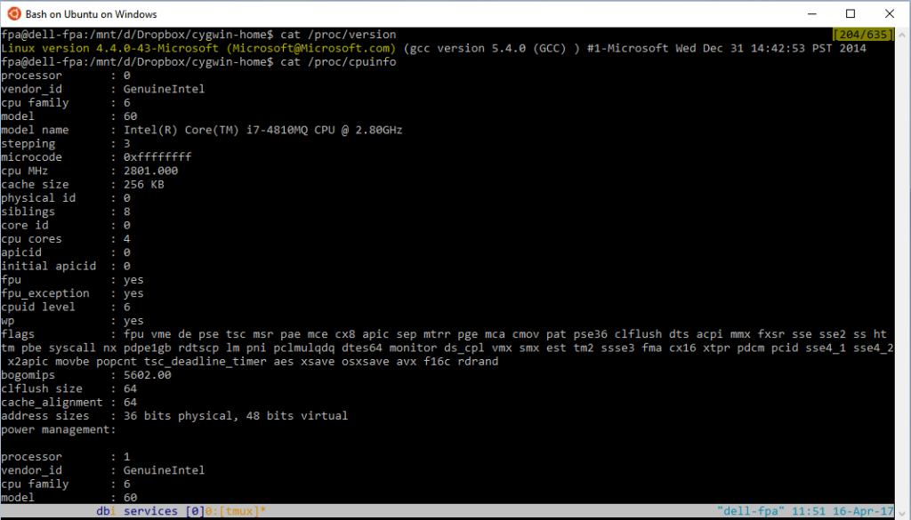
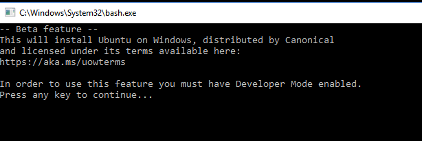
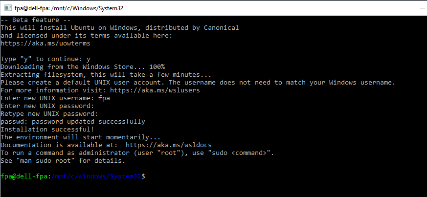

|
|
This was first published on https://blog.dbi-services.com/sqlcl-on-bash-on-ubuntu-on-windows (2017-04-16)
Republishing here for new followers. The content is related to the the versions available at the publication date
I’m running my laptop on Windows, which may sound weird, but Linux is unfortunately not an option when you exchange Microsoft Word documents, manage your e-mails and calendar with Outlook and present with Powerpoint using dual screen (I want to share on the beamer only the slides or demo screen, not my whole desktop). However, I have 3 ways to enjoy GNU/Linux: Cygwin to operate on my laptop, VirtualBox to run Linux hosts, and Cloud services when free trials are available.
Now that Windows 10 has a Linux subsystem, I’ll try it to see if I still need Cygwin. In a summary, I’ll still use Cygwin, but may prefer this Linux subsystem to run SQLcl, the SQL Developer command line, from my laptop.
In this post I’ll detail what I had to setup to get the following:  Bash on Windows 10 is available for several months, but with no interaction with the Windows system except accessing to the filesystems. I didn’t try that. This month, Microsoft has released a new update, called ‘Creator Update’ for whatever reason.
You will probably have no choice to update to ‘Creator Update’ soon but for the moment you have to download Windows10Upgrade9252.exe from https://www.microsoft.com/en-us/software-download/windows10
You enable the feature from Control Panel -> Programs and Features -> Turn Windows features on and off:

This requires a reboot. Windows is not yet an OS where you can install or enable features without closing everything. But at least in Windows 10 the reboot is very fast.
This is a beta feature and requires to enable developer mode: 
You do that on the Setup -> Update and Security -> For developers:
Now, when you run it (type Bash in the start menu) it installs a subset of Ubuntu (downloaded from the web):  It asks for a user and password. You will need the password to sudo to root. You are in Windows/System32 here, which is ugly, so better exit and run again ‘Bash on Ubuntu on Windows’.
All my customization (.bash_profile .bashrc .vimrc .tmux.conf .ssh/config … ) is in my cygwin environment and I want to share it for the time I’ll run both Cygwin and Bash on Ubuntu on Windows. For this, I sudo and change the entry in /etc/passwd to have my home where I have my cygwin.home:
fpa:x:1000:1000:"",,,:/mnt/d/Dropbox/cygwin-home/:/bin/bash
Here are the mount points I have on Cygwin
$ mount C:/cygwin64/bin on /usr/bin type ntfs (binary,auto) C:/cygwin64/lib on /usr/lib type ntfs (binary,auto) C:/cygwin64 on / type ntfs (binary,auto) C: on /cygdrive/c type ntfs (binary,posix=0,user,noumount,auto) D: on /cygdrive/d type ntfs (binary,posix=0,user,noumount,auto)My C: and D: windows drives are mounted in /cygdrive
Here are the mounts I have on the Windows Subsystem for Linux:
root@dell-fpa:/mnt# mount rootfs on / type lxfs (rw,noatime) data on /data type lxfs (rw,noatime) cache on /cache type lxfs (rw,noatime) mnt on /mnt type lxfs (rw,noatime) sysfs on /sys type sysfs (rw,nosuid,nodev,noexec,noatime) proc on /proc type proc (rw,nosuid,nodev,noexec,noatime) none on /dev type tmpfs (rw,noatime,mode=755) devpts on /dev/pts type devpts (rw,nosuid,noexec,noatime) none on /run type tmpfs (rw,nosuid,noexec,noatime,mode=755) none on /run/lock type tmpfs (rw,nosuid,nodev,noexec,noatime) none on /run/shm type tmpfs (rw,nosuid,nodev,noatime) none on /run/user type tmpfs (rw,nosuid,nodev,noexec,noatime,mode=755) C: on /mnt/c type drvfs (rw,noatime) D: on /mnt/d type drvfs (rw,noatime) root on /root type lxfs (rw,noatime) home on /home type lxfs (rw,noatime) binfmt_misc on /proc/sys/fs/binfmt_misc type binfmt_misc (rw,noatime)
Because I have scripts and configuration files that mention /cygdrive, I’ve created symbolic links for them:
fpa@dell-fpa:/mnt$ sudo su [sudo] password for fpa: root@dell-fpa:/mnt# mkdir /cygdrive root@dell-fpa:/# ln -s /mnt/c /cygdrive/c root@dell-fpa:/# ln -s /mnt/d /cygdrive/D
The first thin I do from my bash shell is to ssh to other hosts:
fpa@dell-fpa:/mnt/c/Users/fpa$ ssh 192.168.78.104 Bad owner or permissions on /mnt/d/Dropbox/cygwin-home//.ssh/configOk, permissions of .ssh was set from cygwin, let’s try it from Bash On Ubuntu on Linux:
fpa@dell-fpa:/mnt/c/Users/fpa$ chmod 644 /mnt/d/Dropbox/cygwin-home//.ssh/config fpa@dell-fpa:/mnt/c/Users/fpa$ ls -ld /mnt/d/Dropbox/cygwin-home//.ssh/config -rw-rw-rw- 1 root root 5181 Mar 5 16:56 /mnt/d/Dropbox/cygwin-home//.ssh/configThis is not what I want. With 644 I expect -rw-r–r–
Let’s try 444:
fpa@dell-fpa:/mnt/c/Users/fpa$ chmod 444 /mnt/d/Dropbox/cygwin-home//.ssh/config fpa@dell-fpa:/mnt/c/Users/fpa$ ls -ld /mnt/d/Dropbox/cygwin-home//.ssh/config -r--r--r-- 1 root root 5181 Mar 5 16:56 /mnt/d/Dropbox/cygwin-home//.ssh/config fpa@dell-fpa:/mnt/c/Users/fpa$ ssh 192.168.78.104 Last login: Sun Apr 16 15:18:07 2017 from 192.168.78.1 ...
Ok, this works but there’s a problem. It seems that the Bash On Ubuntu on Linux doesn’t allow to set permissions differently for user, group and others.
The second thing I do from bash in my laptop is to connect to databases with SQLcl. For Cygwin I had an alias that run the sql.bat script because Cygwin can run .bat files. When I run SQLcl from Cygwin, I run the Windows JDK. This doesn’t work in Bash on Ubuntu on Windows because we are in a Linux subsystem. But we don’t need to because SQLcl can be run directly from the sql bash script, calling the Linux JDK from the Linux subsystem. There’s only one thing to do: download the Linux JDK and set JAVA_HOME to the directory.
In my .bashrc I have the following to set the ‘sql’ alias depending on which environment I am
if [[ $(uname -a) =~ CYGWIN ]] then alias sql='/cygdrive/D/Soft/sqlcl/bin/sql.bat' else alias sql='JAVA_HOME=/mnt/d/Soft/jdk1.8.0-Linux /cygdrive/D/Soft/sqlcl/bin/sql' fi
What I observe here is that it is much faster (or less slower…) to start the JVM from the Linux subsystem. Here 4 seconds to start SQLcl, connect and exit:
fpa@dell-fpa:/tmp$ time sql sys/oracle@//192.168.78.104/pdb1 as sysdba << real 0m4.684s user 0m3.750s sys 0m2.484s fpa@dell-fpa:/tmp$ uname -a Linux dell-fpa 4.4.0-43-Microsoft #1-Microsoft Wed Dec 31 14:42:53 PST 2014 x86_64 x86_64 x86_64 GNU/LinuxHere the same from Windows (Cygwin to time – but it’s running on Windows):
$ time sql sys/oracle@//192.168.78.104/pdb1 as sysdba << Disconnected from Oracle Database 12c Enterprise Edition Release 12.2.0.1.0 - 64bit Production real 0m16.261s user 0m0.000s sys 0m0.015s fpa@dell-fpa ~ $ uname -a CYGWIN_NT-10.0 dell-fpa 2.7.0(0.306/5/3) 2017-02-12 13:18 x86_64 Cygwin
The Linux subsystem on Windows is not yet ready. The only thing I proved here is that it is faster to start a Java application from Linux, but for this I always have a VirtualBox VM started on my laptop, and this is where it is faster to run it, and have a real Linux system.
{kind=link}
{kind=link}
{kind=link}
{kind=link}